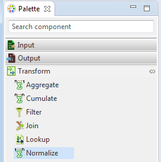

<!-- Copyright 2016 Capital One Services, LLC and Bitwise, Inc.
 Licensed under the Apache License, Version 2.0 (the "License");
 you may not use this file except in compliance with the License.
 You may obtain a copy of the License at
 http://www.apache.org/licenses/LICENSE-2.0
 Unless required by applicable law or agreed to in writing, software
 distributed under the License is distributed on an "AS IS" BASIS,
 WITHOUT WARRANTIES OR CONDITIONS OF ANY KIND, either express or implied.
 See the License for the specific language governing permissions and
 limitations under the License. -->
 
 
<!doctype html>
<html>
<head>
	<title>Normalize</title>
</head>
<body></body>
</html>
<title></title>
<p><strong><span style="color:#FF0000;"></span></strong><span style="color:#FF0000;">Hydrograph Help</span></p>

<p><font face="verdana, geneva, sans-serif"><span style="font-size: 28px;">Normalize</span></font></p>

<p><span style="font-size:14px;"><span style="font-family:verdana,geneva,sans-serif;">Hydrograph Release Version 1.0</span></span></p>

<p><span style="font-family:verdana,geneva,sans-serif;"><span style="font-size: 14px;"><b>Normalize</b>&nbsp; allows the user to add, modify, and rename columns, as well as combine column data to create new fields.  It is present under the Transform category in the component palette, and contains only one input and one output port. </span></span></p>


<p><span style="font-family:verdana,geneva,sans-serif;"><span style="font-size: 14px;">The Normalize component can be easily distinguished in the component palette.</span></span></p>

<p></p>

<p><span style="font-family:verdana,geneva,sans-serif;"><span style="font-size: 14px;">An enlarged version of the same is depicted when dragged on the canvas.</span></span></p>

<p><span style="font-size:14px;"><span style="font-family:verdana,geneva,sans-serif;"></span></span></p>

<p><span style="font-size:14px;"><span style="font-family:verdana,geneva,sans-serif;">For further reference click on the links below:</span></span></p>

<ul>
	<li><span style="font-size:14px;"><span style="font-family:verdana,geneva,sans-serif;"><a href="Normalize_Properties.html">Properties</a></span></span></li>
	<li><span style="font-size:14px;"><span style="font-family:verdana,geneva,sans-serif;"><a href="Normalize_Mapping_View.html">Mapping View</a></span></span></li>
</ul>
